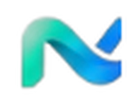
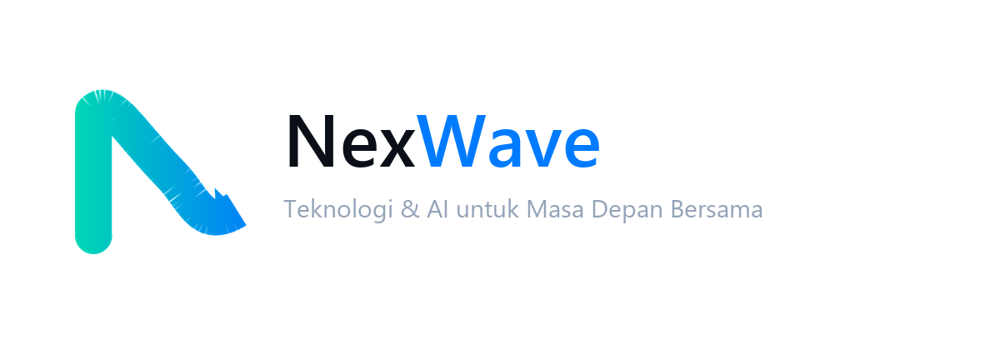
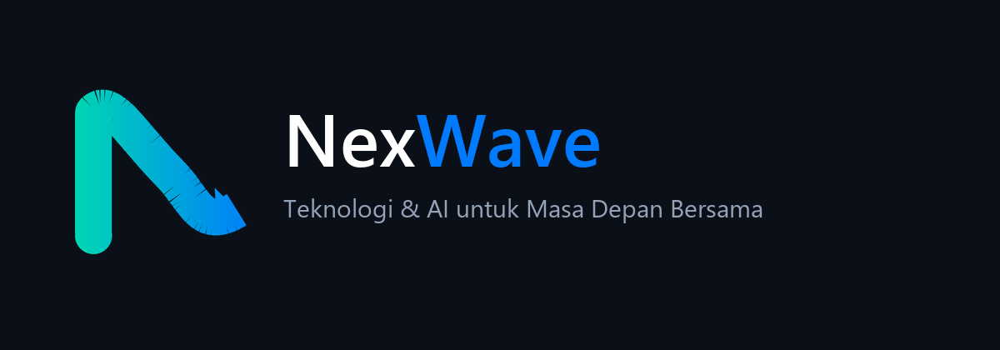
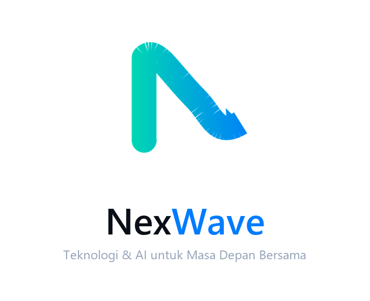
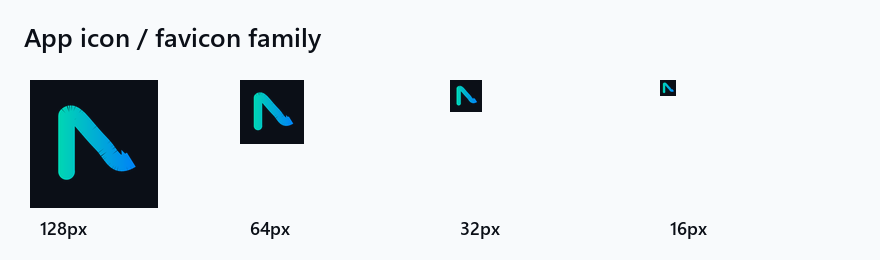
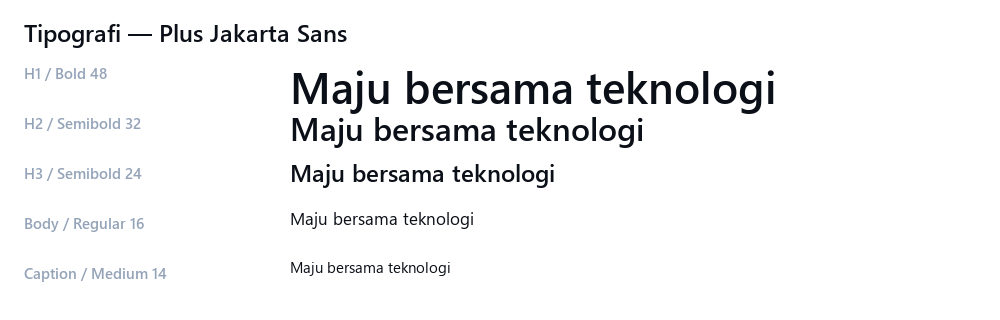
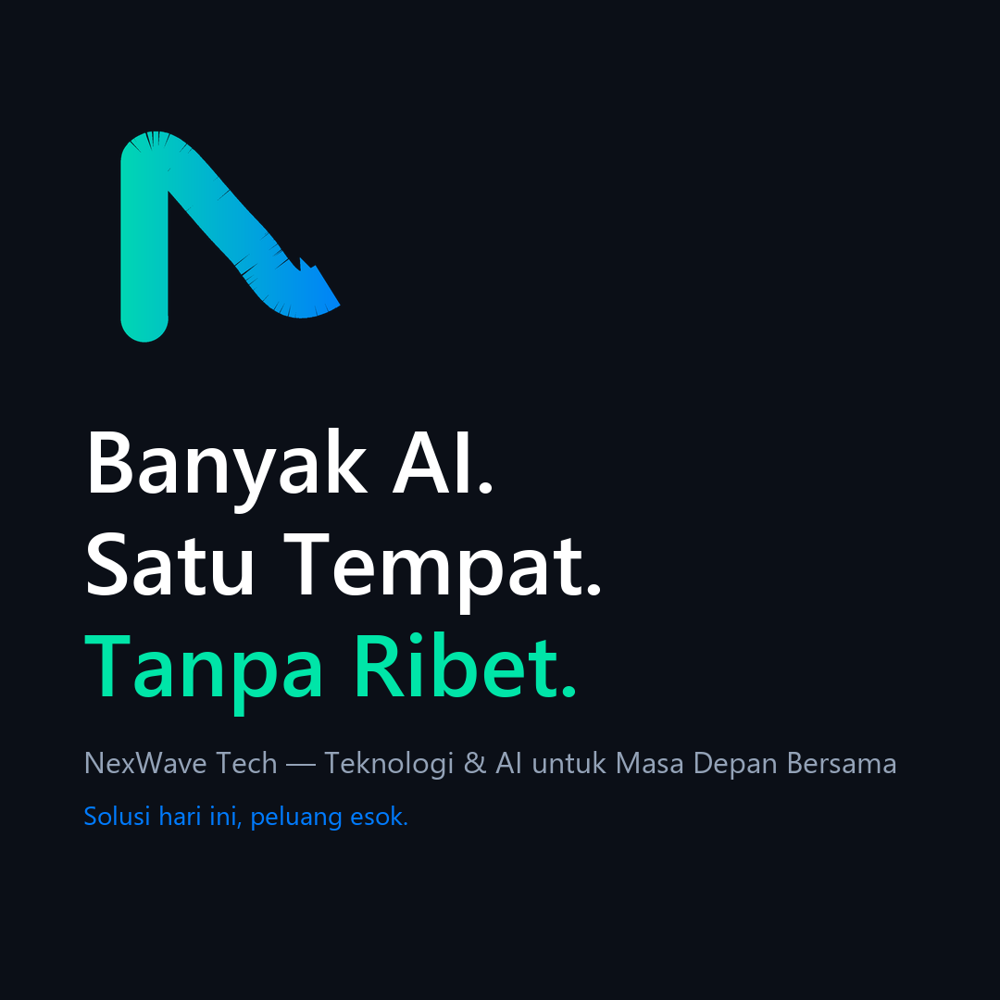

Identitas visual dan verbal resmi. Dokumen ini adalah sumber kebenaran untuk semua materi NexWave Tech.
Versi 1.0 · September 2026
Perkembangan teknologi tidak bisa dihindari. NexWave Tech hadir supaya orang dan bisnis tidak tertinggal — dengan mengubah teknologi, termasuk AI, menjadi alat kerja yang praktis, aman, dan bisa dipakai.
Membantu individu, UMKM, dan perusahaan memakai teknologi dan AI sebagai pendamping kerja, bukan sesuatu yang dihindari atau ditakuti.
Solusi yang mudah dipahami, aman dipakai, dan berdampak nyata pada operasional sehari-hari.
Partner teknologi yang menemani klien bergerak maju — bukan vendor yang menyerahkan aplikasi lalu pergi.
Satu pita menyambung yang membentuk huruf N sekaligus gelombang yang bergerak maju. Huruf N sebagai fondasi engineering, gelombang sebagai gerak mengikuti perkembangan teknologi. Gradasi hijau ke biru melambangkan AI yang bekerja bersama manusia.

Utama — latar terang

Terbalik — latar gelap

Bertumpuk + tagline

Ikon aplikasi & favicon
| Berkas | Ukuran | Pemakaian |
|---|---|---|
logo-mark-gradient.svg | vektor | Mark utama, web & cetak |
logo-mark-mono.svg | vektor | Mark satu warna |
app-icon-1024.png | 1024² | Ikon aplikasi, toko aplikasi |
pwa-icon-192.png / pwa-icon-512.png | 192² / 512² | PWA & Android |
apple-touch-icon.png | 180² | iOS home screen |
favicon.ico | 16/32/48 | Browser tab |
og-default.png | 1200×630 | Preview WhatsApp, LinkedIn, X |
10-ad-square.png | 1080² | Konten sosial |
Dua warna energi untuk identitas, dua warna netral untuk struktur, satu gelap untuk fondasi.
linear-gradient(135deg,#00E5A0,#0066FF)
Sans-serif geometris yang modern dan terbaca jelas di layar kecil. Dipakai konsisten untuk seluruh materi.

| Peran | Berat | Ukuran | Pemakaian |
|---|---|---|---|
| Display | 800 | clamp(2rem,5vw,3rem) | Hero headline |
| Heading | 700 | 1.35–1.9rem | Judul bagian |
| Subheading | 600 | 1.05rem | Judul kartu |
| Body | 400 | 1rem / 1.65 | Paragraf |
| Caption | 500 | 0.875rem | Metadata, label |
Bahasa yang menenangkan, jelas, dan membumi. Kami tidak menjual ketakutan dan tidak menggurui.
Teknologi & AI untuk Masa Depan Bersama
“AI bukan pengganti tim Anda. Ini alat supaya tim Anda bekerja lebih cepat.”
“Teknologi bergerak terus. Kami bantu Anda mengikutinya tanpa ribet.”
“Bisnis Anda akan mati kalau tidak pakai AI sekarang.”
“Solusi revolusioner terbaik di kelasnya dengan teknologi mutakhir terkini.”

Konten sosial 1080×1080